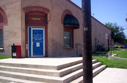

Organization By-Laws
General Policies
Advocacy Outreach
200 Depot Street,
P. O. Box 169, Elgin,
Texas 78621
Phone 512 281-4180
FAX 512 281-9599
COVID-19 Office Hours and Procedures
Advocacy Outreach Vision Statement
To help build successful people and families with the resources
to take care of their own needs, both immediate and long-term,
and the ability to advocate for themselves
in the community, schools and the workplace.Our Mission
To facilitate social change and justice through advocacy and
a provision of services to the poor and disenfranchised
in Bastrop County and surrounding rural areas.
About Advocacy Outreach
Advocacy Outreach was founded in 1992 with a mission to address the crisis needs and long term goals of Central Texas families striving to increase their economic stability. A Board of Directors comprised of representatives from the social service fields of mental health, domestic violence, disabilities and HIV/AIDS recruited volunteer attorneys and paralegals to develop an advocacy program which helped with issues such as Social Security disability benefits applications and appeals, divorces, estate planning and discrimination. Board members and volunteers quickly realized that homelessness and hunger were serious problems for disabled or displaced individuals involved in lengthy legal processes and they began to seek additional resources. Americorps VISTA sent in a team of grant writing experts who helped the grassroots organization add programs that prevented families from losing housing. The original founders were Sallie Humphries Wagner, Debra Brackin Wardell and Beth Rolingson Besson. The first VISTA grant writing team members were Peg McIntosh, Bob Evans, and the late great Wes Bennett.
Within the first year of operations, Amy Normand, Director of Ten County Adult Education Cooperative, paid a visit to Advocacy Outreach's (then) one room office in downtown Elgin and suggested that the organization address the educational needs of its client populations. Ten County Co-op provided funding for a Lifeskills Class for homeless women. Twelve women developed a budget, created and marketed their silk scarves in a local hand crafts store. They improved their literacy and math skills, learned budget and business skills, and increased their self-confidence. Subsequently, several of the participants overcame their homeless situations. Thus was the educational programming of Advocacy Outreach begun.
Nearly twenty years later, Advocacy Outreach has continued and expanded educational services to the community and currently operates a family literacy program that addresses the literacy needs of parents and their preschool-age children, several English as a Second Language classes in Elgin and Manor, a Citizenship class, and hosts GED classes in collaboration with Community Action and Manor ISD.
Adult students have developed the skills and prerequisites to enter college, job training, employment (including teaching and social work) and careers in the military. Parents have learned to support the academic progress of their children leading to school success. Children who were involved in family literacy programs in the 90’s are beginning to reach adulthood and some are entering college, the first generation in their families to do so.

The organization now occupies a 3,000 square foot historic building in the heart of Elgin. The site houses a Free Thrift Store, the Al Guerrero Learning Center with a computer lab and classroom, a Day Shelter for those in need, and Advocacy Offices where clients may receive help to prevent or overcome homelessness or assistance linking to resources they need to increase financial stability, address health needs or personal crises. Federal funding from the Texas Department of Housing and Community Affairs, Texas Education Agency and the Federal Emergency Management Act, local funding from the City of Elgin and Bastrop County, private foundations and individual donations enable Advocacy Outreach to serve over one thousand families annually.
Advocacy Outreach
200-A Depot Street, P. O. Box 169, Elgin, Texas 78621
Phone 512 281-4180 ~ FAX 512 281-9599
501(c)3 Non-profit Organization